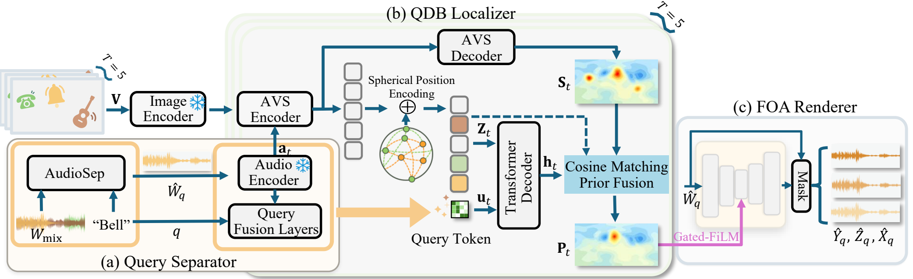

Water tap
Mixture → ground-truth target → predicted target → FOA energy map
Submitted to ICASSP 2027
Spatial audio is central to immersive 360° media, yet a recording offers no control over individual sources. We introduce Audio-Visual Query-Conditioned Target Sound Spatialization (AV-QTSS), which generates the first-order Ambisonics (FOA) signal of a queried source from the omnidirectional channel of a multi-source mixture, a 360° video, and a class from the 13-class DCASE sound-event ontology. The mixture carries no spatial cues, so direction must come from the video, where several objects may sound at once. We propose a query-conditioned dense binding localizer that predicts a spherical probability map without enumerating candidates, coupled to the renderer so both are optimized jointly. Experiments with one to four concurrent sources show improved localization and spatial accuracy, and the localizer transfers to real 360° recordings after adaptation.

Changing only the class query extracts and spatializes a different source from the same video and mono mixture.
Headphones recommended. FOA signals are binaurally decoded for playback.
Synthetic
Three-source scene: bell, door or cupboard, and water tap. Ground-truth target audio is available.
Mixture → ground-truth target → predicted target → FOA energy map
Mixture → ground-truth target → predicted target → FOA energy map
Real recording
Two-source scene: musical instrument and male speech. Source-wise ground truth is unavailable.
Mixture → predicted target → FOA energy map
Mixture → predicted target → FOA energy map